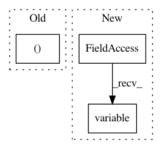

bc5e993ae30a59d7bcdfa03513ecc3d43b58a5f7,tests/auto/test_loss_masking.py,TestLossMasking,test_loss_masking_time,#TestLossMasking#,24
Before Change
Y = 2 * X
weights = np.ones((3, 4, 1)) // Normally the trailing 1 is added by standardize_weights
weights[0, 0] = 0
mask = np.ones((3, 4))
mask[1, 0] = 0
After Change
out = K.eval(weighted_loss(K.variable(X),
K.variable(Y),
K.variable(weights),
K.variable(mask)))
print(out)
In pattern: SUPERPATTERN
Frequency: 3
Non-data size: 3
Instances
Project Name: keras-team/keras
Commit Name: bc5e993ae30a59d7bcdfa03513ecc3d43b58a5f7
Time: 2015-11-19
Author: francois.chollet@gmail.com
File Name: tests/auto/test_loss_masking.py
Class Name: TestLossMasking
Method Name: test_loss_masking_time
Project Name: keras-team/keras
Commit Name: ae72ea0bfe7f7041d6f7580427fa1f69158bab7e
Time: 2018-03-05
Author: me@taehoonlee.com
File Name: tests/keras/backend/backend_test.py
Class Name: TestBackend
Method Name: test_rnn_no_states
Project Name: keras-team/keras
Commit Name: 7c84229f350b83ce397b8c65e52e333e99b6d19d
Time: 2019-03-04
Author: francois.chollet@gmail.com
File Name: keras/backend/tensorflow_backend.py
Class Name:
Method Name: variable